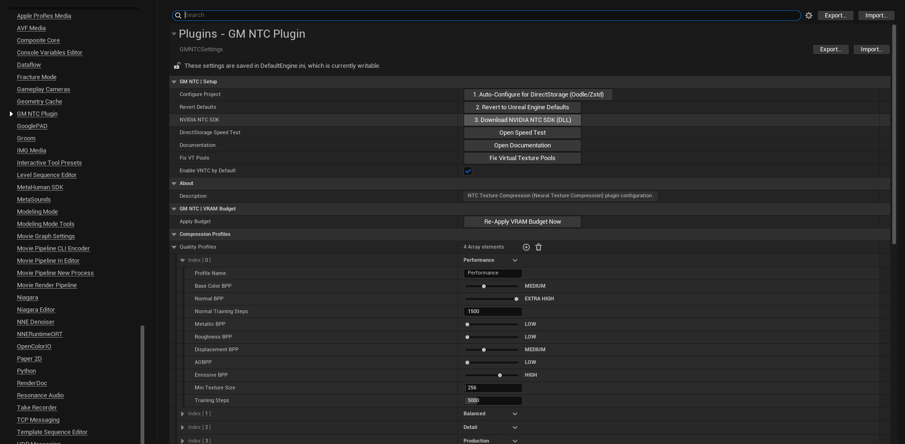
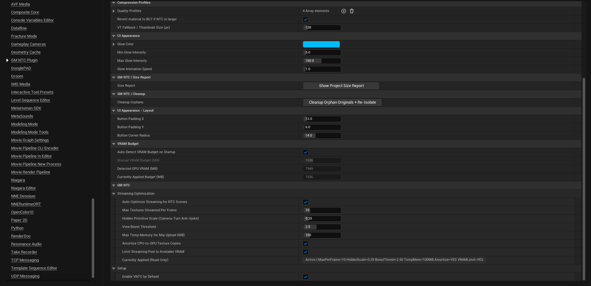

01Installation & Project SetupInstalación y configuración del proyecto
Install the plugin from Fab (or copy the GM_DIRECT_NTC folder into your project's Plugins/ directory), enable it in Edit → Plugins and restart the editor. Requirements: Unreal Engine 5.7, Windows 10/11 x64, DirectX 12, an NVIDIA RTX GPU.
Then open Project Settings → Plugins → GM NTC Plugin and run the numbered setup buttons in order:
1. Auto-Configure for DirectStorage (Oodle/Zstd) — sets the packaging compression and DirectStorage-friendly settings for your project.
2. Revert to Unreal Engine Defaults — undoes step 1 if you ever need to.
3. Download NVIDIA NTC SDK (DLL) — see next section.
Instala el plugin desde Fab (o copia la carpeta GM_DIRECT_NTC en Plugins/ de tu proyecto), actívalo en Edit → Plugins y reinicia el editor. Requisitos: Unreal Engine 5.7, Windows 10/11 x64, DirectX 12 y una GPU NVIDIA RTX.
Después abre Project Settings → Plugins → GM NTC Plugin y usa los botones numerados de setup en orden:
1. Auto-Configure for DirectStorage (Oodle/Zstd) — configura la compresión de empaquetado y los ajustes amigables con DirectStorage.
2. Revert to Unreal Engine Defaults — deshace el paso 1 si lo necesitas.
3. Download NVIDIA NTC SDK (DLL) — ver la siguiente sección.

Project Settings → Plugins → GM NTC Plugin: setup buttons and Quality Profiles.Project Settings → Plugins → GM NTC Plugin: botones de setup y perfiles de calidad.
02Downloading the NVIDIA NTC Runtime (libntc.dll)Descarga del runtime NVIDIA NTC (libntc.dll)
The NVIDIA NTC runtime library libntc.dll is not redistributable under NVIDIA's license, so it is not shipped inside the plugin. It is downloaded once:
Open Project Settings → Plugins → GM NTC Plugin.
Click 3. Download NVIDIA NTC SDK (DLL) (or run the console command GMNTC.DownloadSDK).
Restart the editor when prompted.
The DLL is placed in Plugins/GM_DIRECT_NTC/Source/ThirdParty/GM_NTC_SDK/bin/windows-x64/. When you package your game, libntc.dll is included in the final build automatically.
Tip: the download also configures the Virtual Texture pools your project needs. If you ever see the "Resizing Virtual Texture Pools" notification, press Fix Virtual Texture Pools in the same settings page and restart.
La librería runtime de NVIDIA libntc.dllno es redistribuible bajo la licencia de NVIDIA, por lo que no viene dentro del plugin. Se descarga una sola vez:
Abre Project Settings → Plugins → GM NTC Plugin.
Pulsa 3. Download NVIDIA NTC SDK (DLL) (o ejecuta el comando de consola GMNTC.DownloadSDK).
Reinicia el editor cuando se te indique.
La DLL se instala en Plugins/GM_DIRECT_NTC/Source/ThirdParty/GM_NTC_SDK/bin/windows-x64/. Al empaquetar tu juego, libntc.dll se incluye automáticamente en el build final.
Consejo: la descarga también configura los pools de Virtual Texture que tu proyecto necesita. Si alguna vez ves el aviso "Resizing Virtual Texture Pools", pulsa Fix Virtual Texture Pools en la misma página de ajustes y reinicia.
03The Converter PanelEl panel Converter
Open it from Window → GM NTC Converter. From here you drive the whole workflow:
Compression Quality — active quality profile (see section 05).
Enable VNTC — converts textures as Virtual Textures with on-demand tile inference (recommended).
Quick Scan — analyzes the open map and lists every convertible material without changing anything.
Note: materials using BLEND_Masked, Landscape or WorldAligned nodes are excluded automatically to preserve correctness.Nota: los materiales con BLEND_Masked, Landscape o nodos WorldAligned se excluyen automáticamente para preservar el resultado.
05Quality ProfilesPerfiles de calidad
Four editable profiles control bits-per-pixel (BPP) per channel and neural training steps. Higher BPP / more steps = better fidelity, larger files, longer conversion.
Cuatro perfiles editables controlan los bits por píxel (BPP) por canal y los pasos de entrenamiento neuronal. Más BPP / más pasos = mayor fidelidad, archivos más grandes y conversión más larga.
Profile
Perfil
Use case
Caso de uso
Performance
Maximum compression; ideal for dense scenes and VRAM-limited GPUs.
Máxima compresión; ideal para escenas densas y GPUs con poca VRAM.
Balanced
Good default for most projects.
Buen punto de partida para la mayoría de proyectos.
Detail
Extra fidelity on masks/roughness for hero assets.
Fidelidad extra en máscaras/roughness para assets protagonistas.
Production
Highest fidelity; longest training time.
Máxima fidelidad; mayor tiempo de entrenamiento.
Tip:Revert material to BC7 if NTC is larger (enabled by default) guarantees a conversion never increases the size of a material.
Consejo:Revert material to BC7 if NTC is larger (activo por defecto) garantiza que una conversión nunca aumente el tamaño de un material.
06VRAM Budget & Streaming OptimizationPresupuesto de VRAM y optimización de streaming
The plugin detects your GPU VRAM at startup and applies a safe budget automatically (Auto-Detect VRAM Budget on Startup). You can set a manual budget instead, and re-apply at any time with Re-Apply VRAM Budget Now.
Streaming Optimization smooths camera turns and prevents VRAM spikes: textures streamed per frame, hidden-primitive scale, amortized CPU→GPU copies and a streaming pool limited to the available VRAM. The Currently Applied row shows the live values.
El plugin detecta la VRAM de tu GPU al arrancar y aplica un presupuesto seguro automáticamente (Auto-Detect VRAM Budget on Startup). Puedes fijar un presupuesto manual y re-aplicarlo cuando quieras con Re-Apply VRAM Budget Now.
Streaming Optimization suaviza los giros de cámara y evita picos de VRAM: texturas streameadas por frame, escala de primitivas ocultas, copias CPU→GPU amortizadas y pool de streaming limitado a la VRAM disponible. La fila Currently Applied muestra los valores activos.

VRAM Budget, Streaming Optimization, Size Report and Cleanup tools.Presupuesto de VRAM, Streaming Optimization, Size Report y herramientas de limpieza.
07TroubleshootingSolución de problemas
Symptom
Síntoma
Fix
Solución
Nothing decodes / crash on load
Nada decodifica / crash al cargar
Confirm libntc.dll was downloaded (Project Settings → GM NTC) and restart the editor.
Confirma que libntc.dll se descargó (Project Settings → GM NTC) y reinicia el editor.
"Resizing Virtual Texture Pools" keeps appearing
"Resizing Virtual Texture Pools" reaparece
Press Fix Virtual Texture Pools and restart. The config persists in DefaultEngine.ini.
Pulsa Fix Virtual Texture Pools y reinicia. La config persiste en DefaultEngine.ini.
A material looks wrong after converting
Un material se ve mal tras convertir
Select it and press Revert Selected, then reconvert it individually or exclude it.
Selecciónalo y pulsa Revert Selected; reconviértelo individualmente o exclúyelo.
Want to undo everything
Quieres deshacer todo
Revert Entire Map restores all originals from /GM_NTC_Isolated.
Revert Entire Map restaura todos los originales desde /GM_NTC_Isolated.
Comandos de consola útiles: GMNTC.DownloadSDK, GMNTC.TidyNodes, ntc.RefreshMaterials.
08Disclaimer & Safe UseDescargo de responsabilidad y uso seguro
The plugin is provided "AS IS", without warranty of any kind. To the maximum extent permitted by law, the author is not liable for any damages — including loss or corruption of data, assets, materials or projects — arising from the use of, or inability to use, the plugin.
Read before use: the plugin modifies materials, textures, asset references and project configuration files.
FIRST use it in a separate test/sandbox project until you master the Convert, Isolate, Revert and Clean workflows.
ALWAYS make a full backup (or commit to source control) before converting or isolating real assets.
Verify results in the test project before deploying to production.
By using the plugin you accept full responsibility for testing and backing up your own projects.
El plugin se entrega "TAL CUAL", sin garantía de ningún tipo. En la máxima medida permitida por la ley, el autor no responde por daños — incluida la pérdida o corrupción de datos, assets, materiales o proyectos — derivados del uso o la imposibilidad de uso del plugin.
Lee antes de usar: el plugin modifica materiales, texturas, referencias de assets y archivos de configuración del proyecto.
ÚSALO PRIMERO en un proyecto de prueba/sandbox aparte hasta dominar los flujos Convert, Isolate, Revert y Clean.
Haz SIEMPRE una copia de seguridad (o commit a control de versiones) antes de convertir o aislar assets reales.
Verifica los resultados en el proyecto de prueba antes de usarlo en producción.
Al usar el plugin aceptas la plena responsabilidad de probar y respaldar tus propios proyectos.